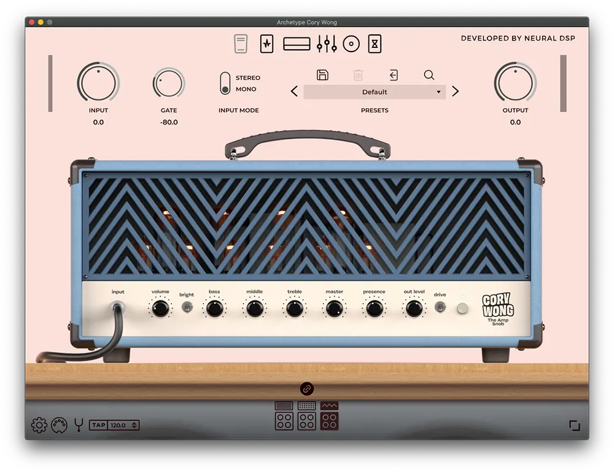
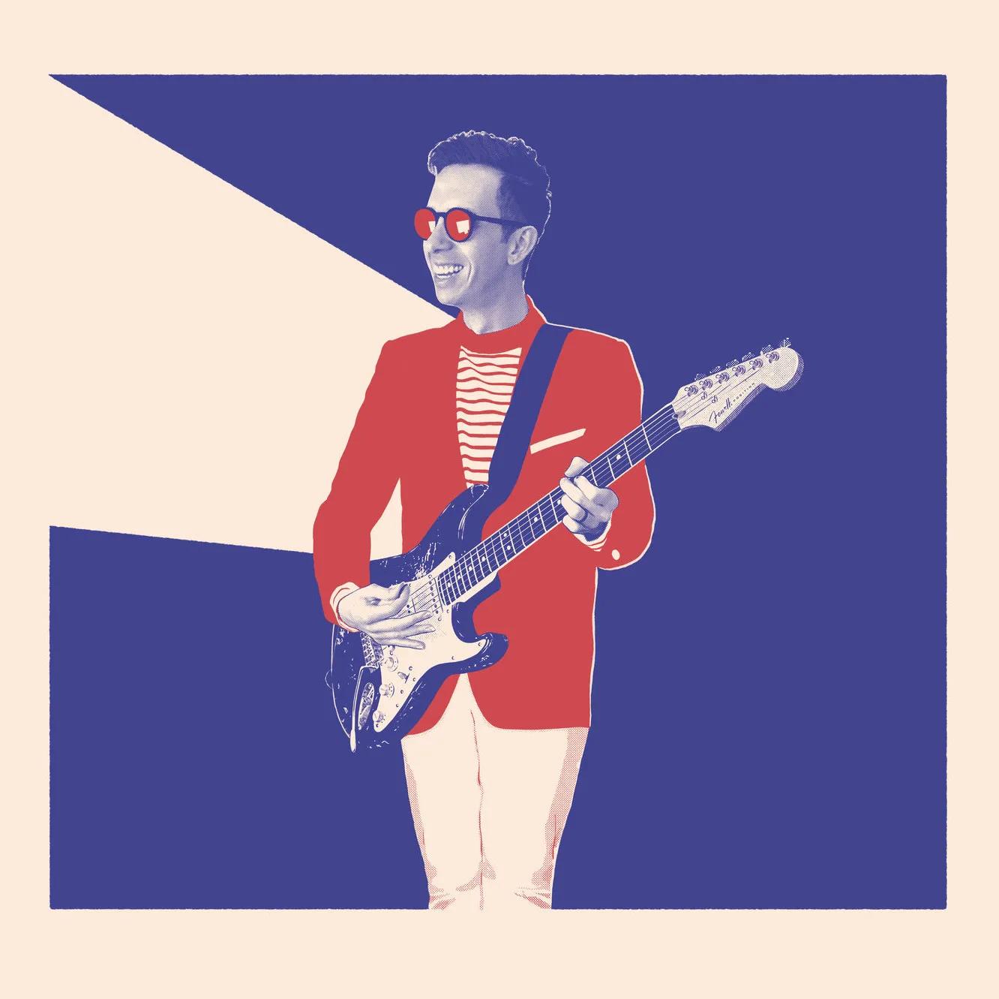
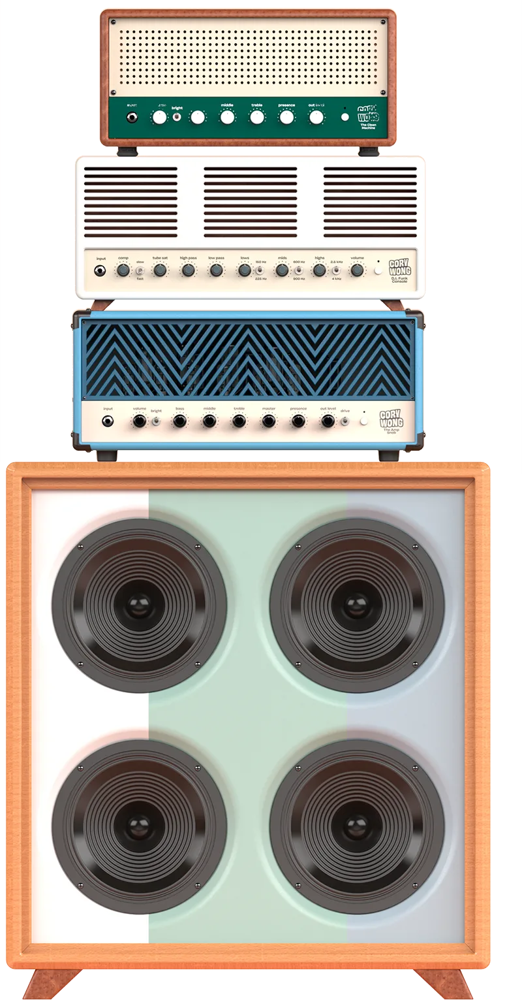
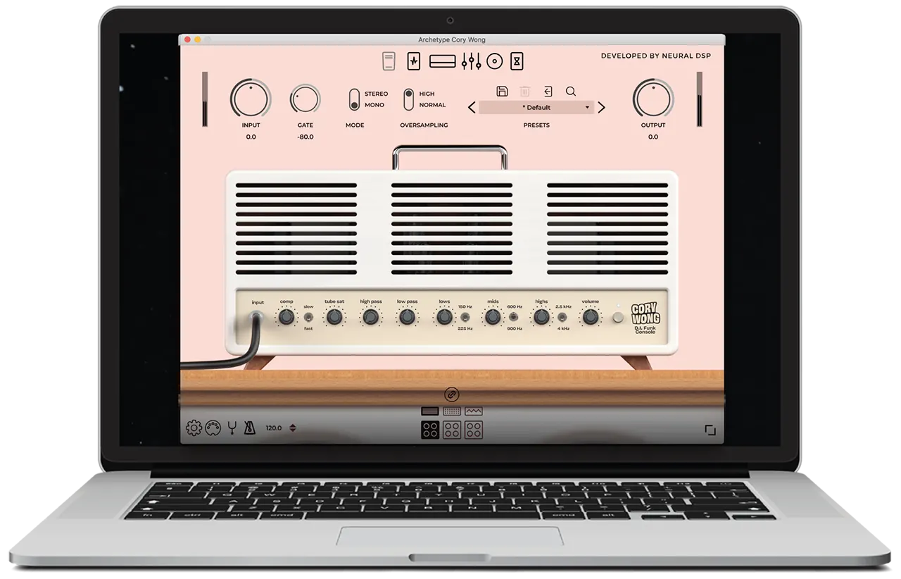

<!DOCTYPE html>
<html lang="en"></html>
<head>
    <meta charset="UTF-8">
    <meta http-equiv="X-UA-Compatible" content="IE=edge">
    <meta name="viewport" content="width=device-width, initial-scale=1.0">
	<title>Archetype: Cory Wong</title>
	<link rel="stylesheet" type="text/css" href="../CSS/b6.css">
    <link rel="stylesheet" href="../Frame/bootstrap-3.1.1-dist/css/bootstrap.css" >
    <link rel="stylesheet" href="https://cdnjs.cloudflare.com/ajax/libs/font-awesome/6.1.1/css/all.min.css">

    <script src="../Frame/js/jquery-3.6.0.min.js"></script>
    <script src="../Frame/js/bootstrap.min.js"></script>
    
    <title>Speaker</title>
	
  
</head>
<body>
    <div class="wrapper">
    <header style="height: 100px;">
        <a href="baitaplon.html"> </a>
       
        <ul class="nav navbar-nav navbar-right">
            
            <li><a href=""><i class="glyphicon glyphicon-search">Tìm kiếm</i></a></li> 
            <li><a href="#"><input type="text" size="40" placeholder="Tìm kiếm"></a></li>
            <li><a href="#soundeffect">Sound</a></li>
            <li><a href="#guitar">Guitar</a></li>
            <li><a href="">Phụ kiện</a></li>
            <li><a href="">Amplifiers</a></li>
            
            <li id="account"> <a href="#"  data-toggle="modal" data-target="#myModal" ><i class="glyphicon glyphicon-user"></i></a></li >
                
            
            <li><a href=""><i class="glyphicon glyphicon-shopping-cart"></i></a></li>
            
            <li id="menu1"><a href="#" class="dropdown-toggle" data-toggle="dropdown"> <i onclick="openNav()"><i class="glyphicon glyphicon-align-justify"></i></i></a></li>              
            <div id="mySidenav" class="sidenav">
                <a href="javascript:void(0)" class="closebtn" onclick="closeNav()">&times;</a>
                <a href="nguoilamweb.html"><span class="colorsb"><i class="glyphicon glyphicon-user"></i><i>Người làm web</i></span></a>
                <a href="nghesi.html"><span class="colorsb"><i class=" fa-solid fa-guitar"></i><i> Nghệ sĩ</i></span></a>
                <a href="#"><span class="colorsb"><i class="fas fa-calendar-week"></i><i>Tin tức</i></span> </a>
                <a href="#"><span class="colorsb"><i class="far fa-question-circle"></i><i>Sự kiện</i></span> </a>
                <a href="#"><span class="colorsb"><i class="fas fa-sliders-h"></i><i>Giảm giá</i></span> </a>
                <a href="#"><span class="colorsb"><i class="far fa-envelope"></i><i>Khóa học</i></span> </a>
              </div>
          
              <!-- Use any element to open the sidenav -->
             
        </ul>
         
    </header> 

	<div class="hero">
		
		<!---Cai menu bo vo day-->

		<div class="content">
			
			<h1 style="color: aliceblue;">Archetype:  <span>Cory Wong</span></h1>
			<h3 style="color: aliceblue;">Một plugin cực kỳ linh hoạt, được thiết kế cho người chơi</h3>
			<h4 style="color: aliceblue;">Giá : 1.420.000 Đ</h4>
			<div class="newslatter">
				<div>
                    <button style="color: aliceblue;">Dùng thử miễn phí</button>
                    <button style="color: aliceblue;">Thêm vào giỏ hàng</button>
                    <button style="color: aliceblue;">Mua ngay</button>
                </div>
				
			</div>
			<div class="img" >
                
            </div>
		</div>
	</div>

	<!----About 1 ---->
	<section class="about">
		<div class="main">
			
			<div class="about-text">
				<h2>Overview</h2>
				<h5>Developer <span>& Designer</span></h5>
				<p>Thật khó để nghĩ về nhiều nghệ sĩ có thể đạt được những gì Vulfpeck có. Sự kết hợp hoàn hảo giữa tài năng điên cuồng, âm nhạc tuyệt vời và thiên tài xây dựng thương hiệu đã đưa họ từ nguồn gốc DIY của mình để tích lũy một cơ sở người hâm mộ đình đám được quốc tế biết đến, bán hết Madison Square Garden. Trong đó, Cory Wong đã trở thành một anh hùng guitar hiện đại, được biết đến với phong cách chơi độc đáo và giai điệu hoàn hảo.Các tiêu chuẩn không khoan nhượng của Cory và những kỳ vọng phi thực tế về sự hoàn hảo nằm ở ranh giới đã tạo ra thách thức mà chúng tôi đang theo đuổi. Kết quả không giống như bất cứ điều gì chúng tôi đã làm trước đây: một plugin cực kỳ linh hoạt, được thiết kế để cung cấp nhiều tùy chọn cho người chơi nhằm tìm kiếm những tông màu hoàn hảo và rõ ràng.</p>
				<button type="button" style="color: aliceblue;">Let's Talk</button>
			</div>
		</div>
	</section>

	<!----About 2 ---->
	<section class="about2">
		<div class="main">
			
			<div class="about-text">
				<h2>Cabsim</h2>
				
				<h5>Developer <span>& Designer</span></h5>
				<p>Dựa trên dải kênh analog, DI Funk Console cho phép bạn tạo lại “giai điệu bong bóng” cổ điển. Có độ bão hòa ống, một máy nén mạnh mẽ, các tần số có thể lựa chọn trên phần EQ và bộ lọc High Pass và Low Pass để kiểm soát tối ưu. DI Funk Console hoạt động tuyệt vời mà không cần tủ đựng! Bỏ qua nó để thêm một số màu cổ điển vào tín hiệu DI của bạn.Là sự kết hợp của các bộ khuếch đại sạch tốt nhất trong ngành, bộ khuếch đại này đã được tùy chỉnh theo nhu cầu của Cory, bổ sung thêm phạm vi kiểm soát và tính linh hoạt lớn hơn. Kết quả mang lại âm sắc nét, rõ ràng với đầu cuối ấm áp đẹp mắt.</p>
				<button type="button" style="color: aliceblue;">Let's Talk</button>
			</div>
		</div>
	</section>

	<!----About 3---->
	<section class="about3">
		<div class="main">
			
			<div class="about-text">
				<h2>Standalone</h2>
				<h5>Developer <span>& Designer</span></h5>
				<p>Chúng tôi đã tỉ mỉ tạo ra cú quét chính xác mà Cory muốn trong một bàn đạp wah. Bằng cách ánh xạ bàn đạp biểu cảm có thể điều khiển MIDI, bạn có thể nhanh chóng cài đặt plugin để tìm hiểu phạm vi bàn đạp của bạn, giúp bạn kiểm soát toàn bộ quá trình quét. Nếu bạn không có bàn đạp biểu cảm, hãy bật tính năng tự động wah để có được niềm vui vô tận!Chúng tôi đã thiết kế một mô-đun mô phỏng tủ thích ứng và toàn diện có sáu micrô ảo, có thể được đặt xung quanh loa. Xe cabsim có 108 IR trên mỗi taxi trong tổng số 324 IR được Adam “Nolly” Getgood thu được.</p>
				<button type="button" style="color: aliceblue;">Let's Talk</button>
			</div>
		</div>
	</section>
	<iframe width="1018" height="574" src="https://www.youtube.com/embed/Zy9uFDh9I6o" title="YouTube video player" frameborder="0" allow="accelerometer; autoplay; clipboard-write; encrypted-media; gyroscope; picture-in-picture" allowfullscreen style="margin-left: 288px;"></iframe>
	<!-----service ----------->
	<div class="service">
		<div class="title">
			<h2>Nhận Archetype:  <span>Cory Wong</span></h2>
		</div>

		<div class="box">
			<div class="card">
				<i class="fas fa-bars"></i>
				<h5>Dùng thử miễn phí</h5>
				<div class="pra">
					<p>Dùng thử ngay bản miễn phí tại đây , ở đây chúng tôi có thể cho bạn dùng thử trước khi thanh toán trong vòng 7 ngày , hãy thử ngay .</p>

					<p style="text-align: center;">
						<a class="button" href="#">Dùng thử miễn phí</a>
					</p>
				</div>
			</div>

			<div class="card">
				<i class="far fa-user"></i>
				<h5>Thêm vào giỏ hàng</h5>
				<div class="pra">
					<p>hãy thêm sản phẩm của bạn vô giỏ hàng , thêm thông tin của bạn và lựa chọn thêm những sản phẩm khác phù hợp với tiêu chuẩn bạn.</p>

					<p style="text-align: center;">
						<a class="button" href="#">Thêm vào giỏ hàng</a>
					</p>
				</div>
			</div>

			<div class="card">
				<i class="far fa-bell"></i>
				<h5>Thanh toán ngay</h5>
				<div class="pra">
					<p>Mua ngay t đây , chỉ với giá rẻ bạn sẽ nhận được gói âm hưởng đặc sắc âm thanh sống động , truy cập cùng với chúng tôi .  </p>

					<p style="text-align: center;">
						<a class="button" href="#">Thanh toán ngay</a>
					</p>
				</div>
			</div>
		</div>
	</div>

	<!------Contact Me------> 
	<div class="contact-me">
		<p>Hãy để chúng tôi tạo âm thanh giúp bạn ! </p>
		<a class="button-two" href="../HTML/baitaplon.html">Trang Chủ</a>
	</div>

	<!------footer start--------->
	<footer>
		<p style="text-align: center;">Liên Hệ Với Chúng Tôi</p>
		<p style="text-align: center;">Để biết thêm chi tiết về chúng tôi và những sản phẩm sắp ra mắt , hãy liên hệ với chúng tôi qua đường dẫn !</p>
		<div class="social" style="justify-content: center;">
			<a style="background-color: rgb(39, 17, 235);" href="https://www.facebook.com/profile.php?id=100042279922661"><i class="fab fa-facebook-f"></i></a>
			<a style="background-color: rgb(232, 44, 135);"href="https://www.facebook.com/nguyenthanhkhoa123"><i class="fab fa-instagram"></i></a>
		
		</div>
		<p style="text-align: center;" class="end">CopyRight By TranTrongTin &  NguyenThanhKhoa </p>
		
	</footer>
    <script src="../JS/baitaplon.js"></script>
</body>
</html>